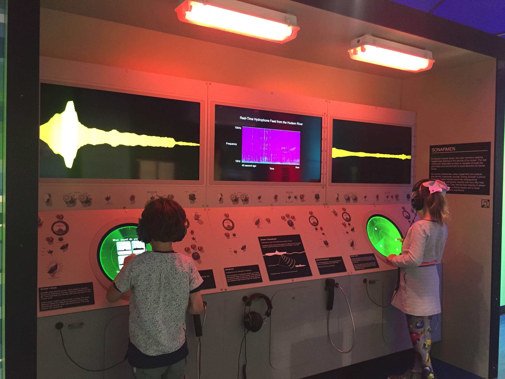

Want to see my school/work related achievements? Check out my resume!
2018
Project: EngineerArena
Technical Lead
2019. More info soon!
Intrepid Musem Exhibitions
Programmer, Audio/Video Integrator

Welcome to Radiation Valley
Programmer
Altotude
Creator
An experiment that allows to control the enviorment with your microphone. Use your pitch to move around the ball!
2017
Souloist
Game Mechanics/Programmer
"Unraveling Toxic Behavior in Online Games"
Author
A technical paper on toxic behavior in gaming, the reasons it arises in competitive games, and long-term solutions that game developers can implement in their games.
Kujira
Programming
Kinect Synthesizer
Creator
2016
Audio Tour of Hoboken
Programmer
Recording samples were taken from various parts of Hoboken, NJ. Audio was mapped by location to a midi controller called a Launchpad. Audio mapping was achieved using SuperCollider, and midi lighting was made possible through the Launchpad.py library.
Tangent
Creator
Currently in development! 2D Unity game originally created for SGDC's Game Jam X and GitHub's Game-Off 2016!
RedBot
Lead Developer / Creator
RedBot is a open source project with the goal to create an easy to manage Discord bot bundled with an array of useful commands.
The link to the GitHub repository can be found here: RedBot
Pakij
Visual Effects & Sound Design
Pakij is a game where you (a rejected package) try to escape the factory that seems to be created to soley crush you. The game snagged 1st place in the Stevens Game Development Club's Game Jam IX.
Stevens Overwatch League
Head Organizer / Founder
Currently finishing up its 2nd season, the Stevens Overwatch League is an on-campus eSports league dedicated to getting more gamers on campus to team up and face each other in a fun, but competitive format. Each season pulls in around 50 Stevens students.
Season 1 Season 2 Group Stage Season 2 Playoffs
2015
Project HiWay
Creator
Project HiWay was a project I started to explore the VR Rhythm Game genre. The game won 3rd place in the Stevens Game Development Club’s Game Jam VII Get the game here! itch.io page
AlexMassenzio.github.io
Creator
Created this website to showcase projects I have done over time!
You're already here, so here's a empty hyperlink to click on! Click me!
2014
GravBall
Creator
My very first game I have designed from the ground up! It somehow managed to get 2nd place in a small game jam on-campus.
Download and play here! GravBall